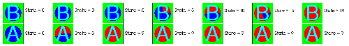

Cycle database correlations operate in exactly the same way as time database correlations except that they correlate using the cycles from each input database instead of using times. figure shows the behavior of databases A and B when using a cycle database correlation.
|  |
| Figure 10 |